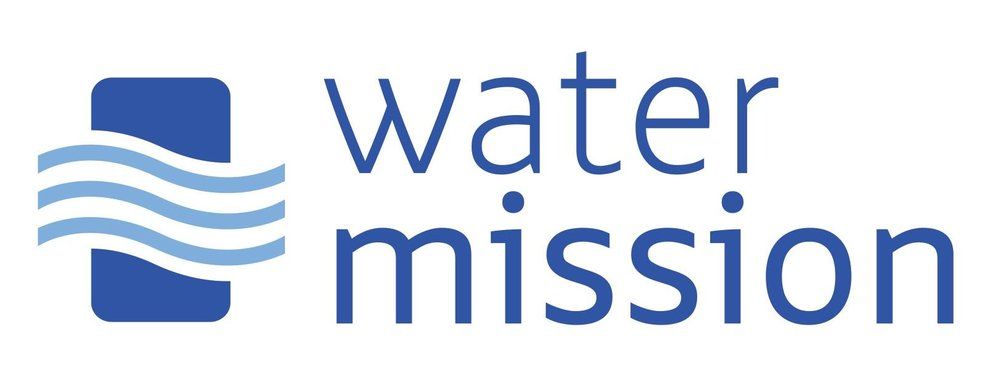
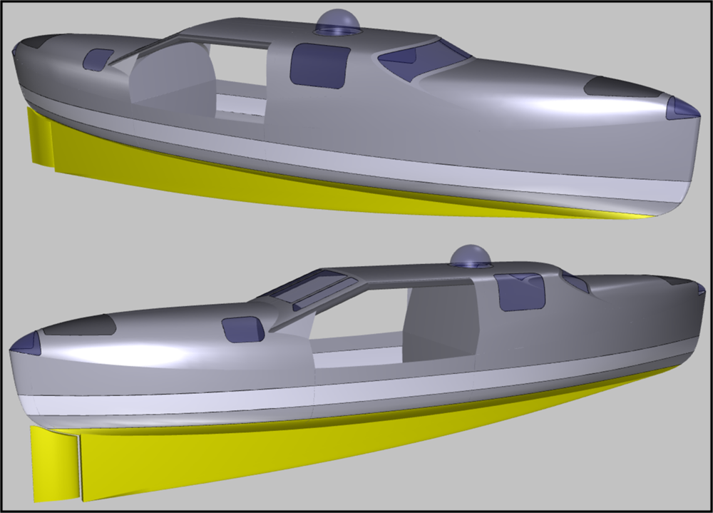

Jacob has partnered with Water Mission, a non-profit engineering organization that builds and implements safe water, sanitation, and hygiene solutions for people in developing countries and disaster areas.
The planned route is from Washington State to Northeast Australia. As a direct route, the distance is 7,145 statute miles. Of course, the actual journey will be anything but direct. However, when the idea to row the Pacific was still just an idea, I thought I would start by looking at previous crossings to determine potential routes. By looking at what has already been accomplished, I got a better understanding of potential start-stop points, the required time, and typical departure time-frames. Information regarding the previous routes is courtesy of the Ocean Rowing Society Int.
If you are interested in donating, go to Jacob's website.